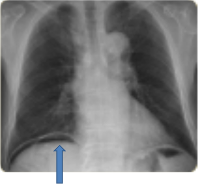
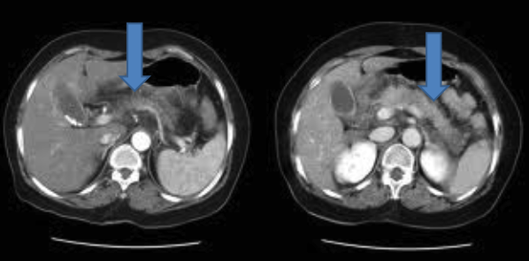

대부분 안전하게 시술이 끝나지만, 5~10%의 환자에서는 다음과 같은 합병증이 발생할 수 있습니다.
급성 췌장염: 가장 흔한 합병증으로 검사를 위해 췌관에 조영제를 주입하여 자극되거나 정상적으로 담관과 췌관이 합쳐지는 구조로 시술중에 어쩔 수 없이 췌관이 손상될 수 있어서 발생하는 것으로 합병증의 예측이 어렵고 발생할 경우 복부 CT 검사 및 장기간의 치료가 필요할 수 있습니다.

급성 담관염 및 담낭염
장출혈 및 장천공: 특히 괄약근 절개 시에 동반됩니다.

약물 알레르기
치아 손상
폐렴
패혈증
사망